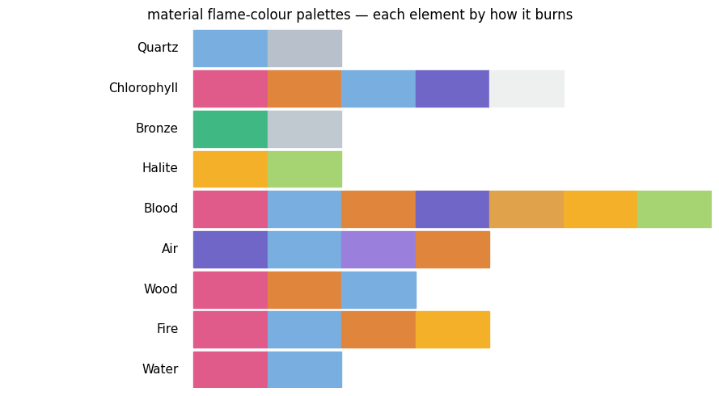
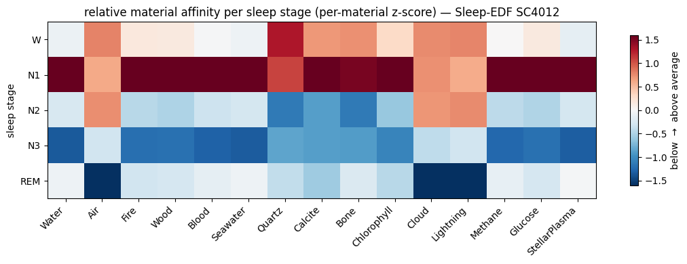
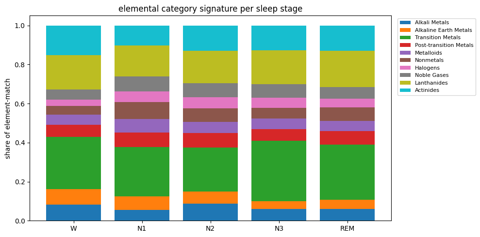
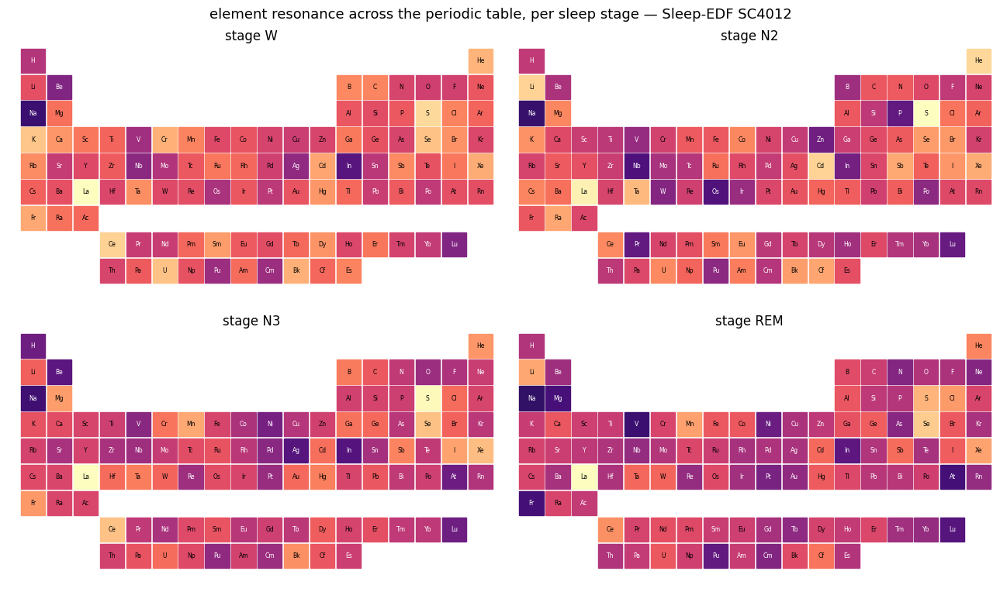
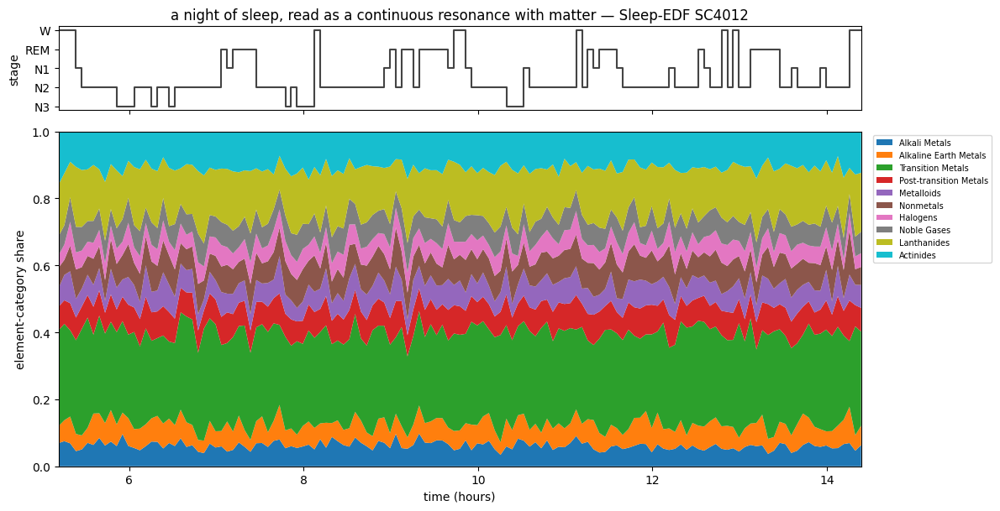

bioelements — from biosignals to the periodic table, and to materials#
Every atom emits light at a characteristic set of wavelengths — its emission
spectrum. bioelements octave-folds a biosignal’s peaks into the optical band and
asks which elements’ lines they land on: the same octave-transpose biocolors uses
to send a frequency to a colour, bioelements uses to send it to the periodic
table.
The expansion lifts this from atoms to materials. A Composition is a
weighted bag of elements — or of other compositions — so water, air, wood, a cloud,
any composition of matter, has its own composite spectrum, and therefore its own
chord, tuning, palette, geometry, and biosignal affinity.
import warnings; warnings.filterwarnings('ignore')
import numpy as np
import matplotlib.pyplot as plt
from biotuner import bioelements as be
df = be.load_elements('air')
print(f'{len(df):,} NIST emission lines across {df.element.nunique()} elements')
print('element categories:', ', '.join(sorted(df.type.unique())))
C:\Users\skite\Documents\Github\biotuner\.claude\worktrees\epic-morse-ded0d5\biotuner\biotuner_object.py:11: DeprecationWarning:
The `fooof` package is being deprecated and replaced by the `specparam` (spectral parameterization) package.
This version of `fooof` (1.1) is fully functional, but will not be further updated.
New projects are recommended to update to using `specparam` (see Changelog for details).
from fooof import FOOOF
21,896 NIST emission lines across 99 elements
element categories: Actinides, Alkali Metals, Alkaline Earth Metals, Halogens, Lanthanides, Metalloids, Noble Gases, Nonmetals, Post-transition Metals, Transition Metals
An element is a spectrum is a chord is a tuning#
The atom is already a first-class harmonic object. Take hydrogen’s strongest lines, fold them to audio, reduce to ratios — a material tuning.
h = be.element_spectrum('Hydrogen', top=12)
print('hydrogen — strongest folded ratios:', be.material_tuning(be.MATERIALS['Water'], n_steps=6))
print('an element leaf spectrum:', h)
hydrogen — strongest folded ratios: [1.0, 1.08, 1.12, 1.35, 1.4286, 1.512]
an element leaf spectrum: Spectrum('Hydrogen', 12 lines, dominant: Hydrogen 100%)
Matter is compositions of atoms#
Water is H₂O. The composite spectrum is the weighted superposition of its elements’ spectra — but each element must be budget-normalised first, or line-rich elements (oxygen has 3× hydrogen’s lines) would dominate regardless of stoichiometry. With budget-normalisation, water is 2/3 hydrogen, 1/3 oxygen by design.
water = be.MATERIALS['Water']
print('water.elements() ', {k: round(v,3) for k,v in water.elements().items()})
print('spectral dominance ', {k: round(v,3) for k,v in water.dominant(top=None).items()})
print('air.elements() ', {k: round(v,3) for k,v in list(be.MATERIALS["Air"].elements().items())[:3]})
water.elements() {'Hydrogen': 0.667, 'Oxygen': 0.333}
spectral dominance {'Hydrogen': 0.667, 'Oxygen': 0.333}
air.elements() {'Nitrogen': 0.78, 'Oxygen': 0.21, 'Argon': 0.009}
Composition is recursive: a cloud is water + air#
A structure’s parts are themselves materials, so composition bottoms out at element leaves through any depth.
cloud = be.MATERIALS['Cloud']
print('cloud.elements()', {k: round(v,3) for k,v in list(cloud.elements().items())[:5]})
print('cloud composite spectrum:', len(cloud.spectrum()), 'lines')
cloud.elements() {'Nitrogen': 0.741, 'Oxygen': 0.216, 'Hydrogen': 0.033, 'Argon': 0.009, 'Carbon': 0.0}
cloud composite spectrum: 280 lines
The dictionary spans matter — a measured claim#
Materials are tagged on four axes (compositional level · material class · natural
domain · element category). coverage_report() is a build gate: every class and
domain represented, and the falsifiable metric — ≥ 8 of the 10 NIST element
categories exercised.
rep = be.coverage_report(be.MATERIALS)
bioelements coverage — 153 materials
kinds: {'element': 100, 'compound': 32, 'mixture': 16, 'structure': 5}
classes 14/14: missing none
domains 7/7: missing none
element categories 10/10 (gate >=8): PASS
have: ['Actinides', 'Alkali Metals', 'Alkaline Earth Metals', 'Halogens', 'Lanthanides', 'Metalloids', 'Noble Gases', 'Nonmetals', 'Post-transition Metals', 'Transition Metals']
missing: none
OVERALL: PASS
A biosignal resonates with materials, not just atoms#
Fold a signal’s peaks to the optical band and score them against every material’s composite lines (relative, cents-based tolerance). A biosignal now has a graded affinity to water, wood, iron — the materials it most resonates with.
sig = np.array([7.83, 14.3, 20.8, 27.3, 33.8]) # a Schumann-like signal
ranked = be.match_materials(sig, tol_cents=60)
print(ranked.head(8).to_string(index=False))
material affinity kind archetype
Galena 0.559888 compound
Pyrite 0.539446 compound
Quartz 0.475108 compound earth
SilicaGlass 0.475108 compound
UraniumGlass 0.453835 compound
Granite 0.445107 mixture
Halite 0.444207 compound
InterstellarDust 0.441789 mixture
Every material affords a palette — its flame colours#
Each element burns with a characteristic colour (how chemists identify them by flame: Na→amber, Cu→green, K→violet, Li→crimson…). A material’s palette is the flame colours of its dominant elements, weighted by composition — so water (H/O) reads nothing like a copper alloy (green) or table salt (amber+green).
mats = ['Water','Fire','Wood','Air','Blood','Halite','Bronze','Chlorophyll','Quartz']
fig, ax = plt.subplots(figsize=(9, 5))
for row, name in enumerate(mats):
pal = be.material_flame_palette(be.MATERIALS[name], n=7)
for col, hexc in enumerate(pal):
ax.add_patch(plt.Rectangle((col, row), 1, 0.9, color=hexc))
ax.text(-0.2, row + 0.45, name, ha='right', va='center', fontsize=11)
ax.set_xlim(-2.5, 7); ax.set_ylim(0, len(mats)); ax.axis('off')
ax.set_title('material flame-colour palettes — each element by how it burns')
plt.tight_layout(); plt.show()

And a tuning, a chord, a form#
The same composite spectrum reduces to a material scale, sounds as a material chord,
and hands off to harmonic_geometry as a HarmonicInput for a material’s shape.
for name in ['Water','Fire','Iron']:
m = be.MATERIALS[name]
print(f'{name:6s} tuning={m.tuning(n_steps=6)}')
gi = be.MATERIALS['Water'].geometry(top=6)
print('\nwater.geometry() ->', type(gi).__name__, 'with', len(gi.peaks), 'partials')
Water tuning=[1.0, 1.08, 1.12, 1.35, 1.4286, 1.512]
Fire tuning=[1.0, 1.0083, 1.0456, 1.0468, 1.0531, 1.0618]
Iron tuning=[1.004, 1.0057, 1.0366, 1.0387, 1.0425, 1.0429]
water.geometry() -> HarmonicInput with 2 partials
The compositional hierarchy#
Element H, O, C, N, Fe … leaf spectra (NIST lines)
| stoichiometry
Compound H2O, NaCl, CO2, cellulose fixed atom ratios
| proportion
Mixture air, wood, tissue, blood blends of compounds/elements
| arrangement
Structure cloud, fire, lightning compositions of materials (-> geometry)
One recursive operation — superpose the component spectra, weighted, each budget-normalised — carries all four levels. Everything a material affords is a transform of that one composite spectrum.
Applied: a night of sleep, read as changing matter#
The affinity is not a still image. Run it across a real night of sleep (Sleep-EDF SC4012, EEG Fpz-Cz, 12 real 30-second epochs per stage) and the matter a biosignal resonates with shifts with sleep depth — the same recording, read as a changing composition of matter.
from pathlib import Path
from scipy.signal import welch, find_peaks
p = Path('sleep_stages.npz')
if not p.exists(): p = Path('docs/examples/bioelements/sleep_stages.npz')
S = np.load(p); epochs, stages, sf = S['epochs'], S['stages'], float(S['sf'])
ORDER = ['W','N1','N2','N3','REM']
print('real sleep epochs:', epochs.shape, '|',
{s:int((stages==s).sum()) for s in ORDER})
def epoch_peaks(x, sf, n=6, fmin=1.5, fmax=30):
f, pxx = welch(x, sf, nperseg=int(sf*4)); b=(f>=fmin)&(f<=fmax)
f, db = f[b], 10*np.log10(pxx[b]+1e-30)
idx,_ = find_peaks(db, distance=2)
if len(idx)==0: return np.array([f[np.argmax(db)]])
return f[np.sort(idx[np.argsort(db[idx])[::-1][:n]])]
real sleep epochs: (60, 3000) | {'W': 12, 'N1': 12, 'N2': 12, 'N3': 12, 'REM': 12}
Which materials does each sleep stage resonate with?#
Per-epoch affinity to a curated set of materials, averaged within each stage — shown relative per material (z-scored across stages) so a stage reads as resonating above or below that material’s own average, rather than being swamped by line-dense species that match almost anything.
MATS = ['Water','Air','Fire','Wood','Blood','Seawater','Quartz','Calcite','Bone',
'Chlorophyll','Cloud','Lightning','Methane','Glucose','StellarPlasma']
aff = {s: [] for s in ORDER}
for x, st in zip(epochs, stages):
pk = epoch_peaks(x, sf)
aff[str(st)].append([be.material_affinity(pk, be.MATERIALS[m], tol_cents=60) for m in MATS])
H = np.array([np.mean(aff[s], axis=0) for s in ORDER])
Z = (H - H.mean(0)) / (H.std(0) + 1e-9) # per-material: which stages sit above/below average
fig, ax = plt.subplots(figsize=(11, 4))
im = ax.imshow(Z, aspect='auto', cmap='RdBu_r', vmin=-1.6, vmax=1.6)
ax.set_xticks(range(len(MATS))); ax.set_xticklabels(MATS, rotation=45, ha='right')
ax.set_yticks(range(len(ORDER))); ax.set_yticklabels(ORDER)
ax.set_ylabel('sleep stage')
ax.set_title('relative material affinity per sleep stage (per-material z-score) — Sleep-EDF SC4012')
fig.colorbar(im, ax=ax, label='below → above average', shrink=0.85)
plt.tight_layout(); plt.show()

The elemental type signature of each stage#
Summing match_elements by periodic category gives each stage a fingerprint over
the kinds of matter — a stacked profile that shifts as the night deepens.
from biotuner.bioelements.tables import ELEMENT_CATEGORIES
import matplotlib.cm as cm
cat_mix = {}
for s in ORDER:
xs = epochs[stages==s]
ff, pp = welch(xs[0], sf, nperseg=int(sf*4)); acc = np.zeros_like(pp)
for x in xs: acc += welch(x, sf, nperseg=int(sf*4))[1]
b=(ff>=1.5)&(ff<=30); fb, db = ff[b], 10*np.log10(acc[b]/len(xs)+1e-30)
idx,_ = find_peaks(db, distance=2); top = np.sort(idx[np.argsort(db[idx])[::-1][:6]])
me = be.match_elements(fb[top], top=30, tol_cents=60)
bc = me.groupby('category')['score'].sum()
cat_mix[s] = (bc/bc.sum()).reindex(ELEMENT_CATEGORIES).fillna(0)
fig, ax = plt.subplots(figsize=(10,5)); bottom = np.zeros(len(ORDER))
for c, col in zip(ELEMENT_CATEGORIES, cm.tab10(np.linspace(0,1,len(ELEMENT_CATEGORIES)))):
vals = [cat_mix[s][c] for s in ORDER]
ax.bar(ORDER, vals, bottom=bottom, label=c, color=col); bottom = bottom + vals
ax.set_ylabel('share of element-match'); ax.set_title('elemental category signature per sleep stage')
ax.legend(bbox_to_anchor=(1.01,1), loc='upper left', fontsize=8)
plt.tight_layout(); plt.show()

The periodic table itself, lit by resonance#
Full granularity: score every one of the 99 elements (match_elements) and paint the
result onto the periodic table. Each stage lights a different region of the table —
the resonance has structure across the whole of chemistry, not just a top-few list.
from biotuner.bioelements import periodic as P
PT_STAGES = ['W', 'N2', 'N3', 'REM']
pt_scores = {}
for s in PT_STAGES:
xs = epochs[stages == s]; acc = None
for x in xs:
me = be.match_elements(epoch_peaks(x, sf), top=30, tol_cents=60).set_index('element')['score']
acc = me if acc is None else acc.add(me, fill_value=0)
pt_scores[s] = acc / len(xs)
def draw_pt(ax, sc, title):
vmax = float(sc.max()) or 1e-6
for name in P.NAMES:
pos = P.element_position(name)
if pos is None: continue
r, c = pos; v = float(sc.get(name, 0.0)) / vmax
ax.add_patch(plt.Rectangle((c, -r), 0.92, 0.92, color=plt.cm.magma(v)))
ax.text(c + 0.46, -r + 0.46, P.symbol(name), ha='center', va='center',
fontsize=5.5, color='white' if v < 0.55 else 'black')
ax.set_xlim(-0.5, 18); ax.set_ylim(-9, 1); ax.set_aspect('equal'); ax.axis('off')
ax.set_title(title, fontsize=12)
fig, axs = plt.subplots(2, 2, figsize=(13, 8))
for ax, s in zip(axs.ravel(), PT_STAGES): draw_pt(ax, pt_scores[s], f'stage {s}')
fig.suptitle('element resonance across the periodic table, per sleep stage — Sleep-EDF SC4012', fontsize=13)
plt.tight_layout(); plt.show()

A whole night, continuously — the resonance river#
Not five averages but 139 contiguous epochs across ~9 hours: each folded to the optical band and scored by element category, stacked over time under the hypnogram. The composition of matter the EEG resonates with flows as the night unfolds.
from biotuner.bioelements.tables import ELEMENT_CATEGORIES
import matplotlib.cm as cm
nx, nstg, nt = S['night_epochs'], S['night_stages'], S['night_times_h']
riv = np.zeros((len(nx), len(ELEMENT_CATEGORIES)))
for i, x in enumerate(nx):
me = be.match_elements(epoch_peaks(x, sf), top=30, tol_cents=60)
bc = me.groupby('category')['score'].sum().reindex(ELEMENT_CATEGORIES).fillna(0)
riv[i] = (bc / (bc.sum() + 1e-9)).values
fig, (axh, axr) = plt.subplots(2, 1, figsize=(12, 6.2),
gridspec_kw={'height_ratios': [1, 4]}, sharex=True)
sy = {'W': 4, 'REM': 3, 'N1': 2, 'N2': 1, 'N3': 0}
axh.plot(nt, [sy[s] for s in nstg], drawstyle='steps-post', color='#444', lw=1.5)
axh.set_yticks(list(sy.values())); axh.set_yticklabels(list(sy.keys())); axh.set_ylabel('stage')
axh.set_title('a night of sleep, read as a continuous resonance with matter — Sleep-EDF SC4012')
axr.stackplot(nt, riv.T, labels=list(ELEMENT_CATEGORIES),
colors=cm.tab10(np.linspace(0, 1, len(ELEMENT_CATEGORIES))))
axr.set_xlabel('time (hours)'); axr.set_ylabel('element-category share')
axr.set_ylim(0, 1); axr.set_xlim(float(nt.min()), float(nt.max()))
axr.legend(bbox_to_anchor=(1.01, 1), loc='upper left', fontsize=7)
plt.tight_layout(); plt.show()

As the sleeper descends wake → N1 → N2 → slow-wave N3 and back through REM, the elements and materials the EEG most resonates with move across the periodic table — a biosignal’s affinity with matter is stateful, tracking the brain’s own rhythms.